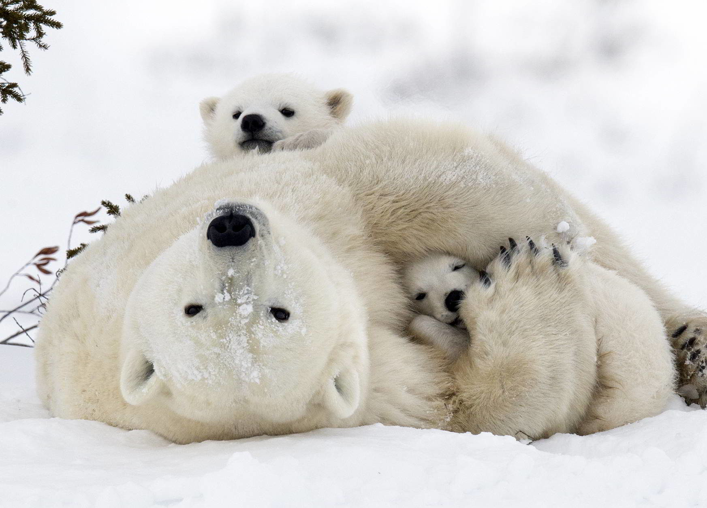

The reindeer (Rangifer tarandus) is an even-toed ungulate mammal of the deer family.
In North America it is also called caribou.
There are about 10-20 reindeer subspecies.
The reindeer is the only deer that has been domesticated.
Polar bear, (Ursus maritimus), great white northern bear (family Ursidae) found throughout the Arctic region.
The polar bear travels long distances over vast desolate expanses, generally on drifting oceanic ice floes, searching for seals, its primary prey.
